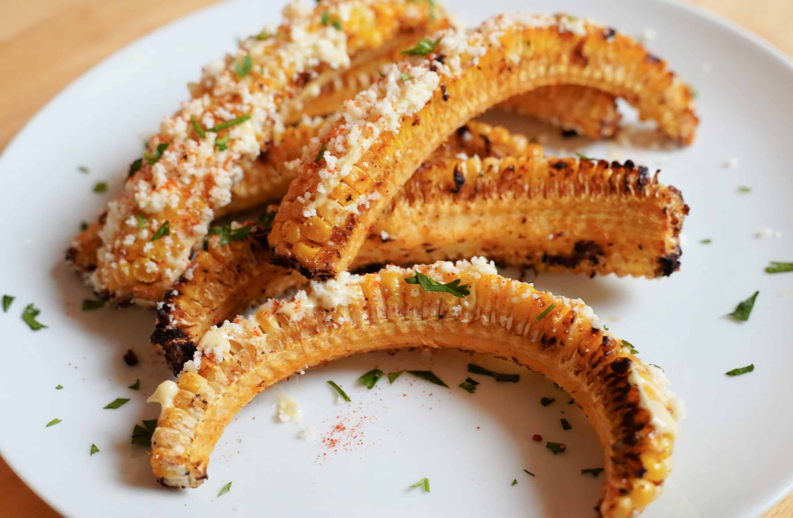

Elote Corn Ribs
Toss with chili powder, cumin, smoked paprika, and lime juice. Top with cotija cheese, cilantro, and a creamy avocado or sriracha mayo sauce.
Go somewhereCreole and Cajun Corn Ribs
Use a Cajun seasoning blend or create your own with cayenne pepper, garlic powder, and onion powder.
Go somewhere
Thai Curry Corn Ribs
Season with a Thai Pad Kra Pao mix or a combination of ginger, garlic, and red pepper flakes.
Go somewhere